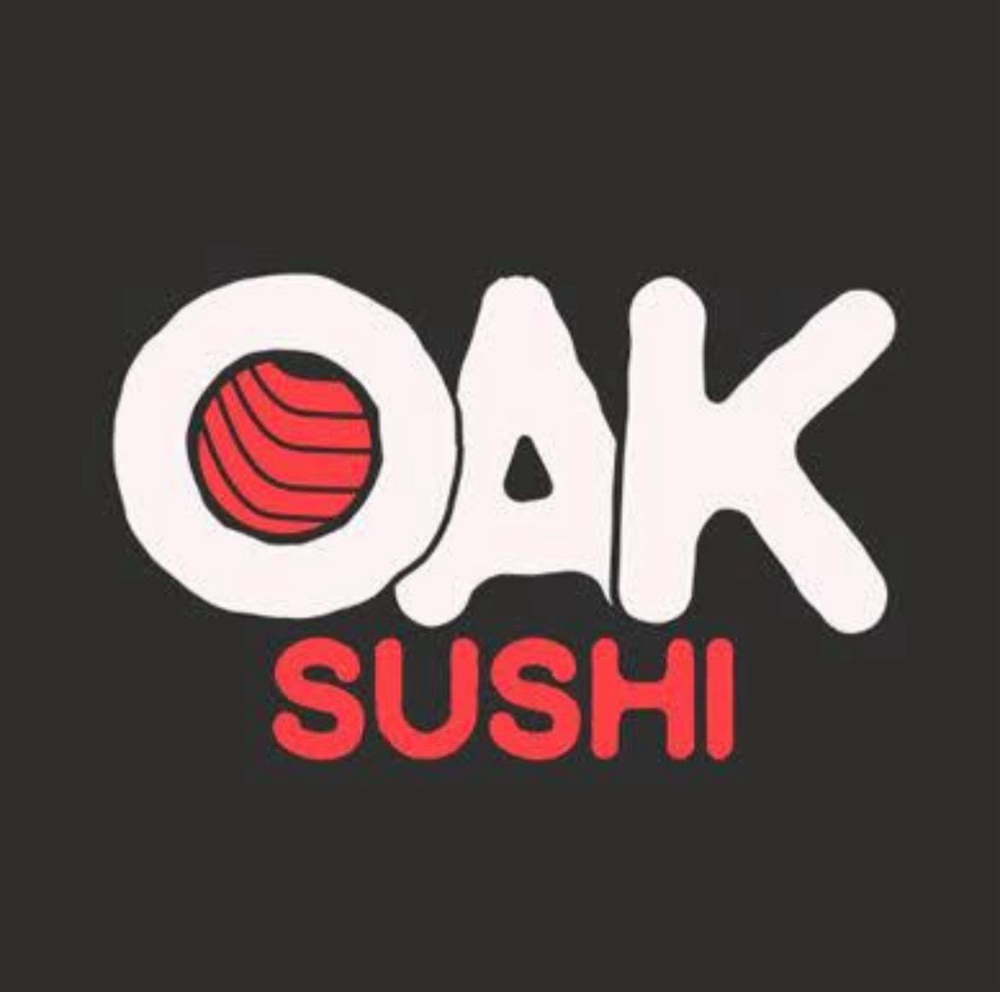
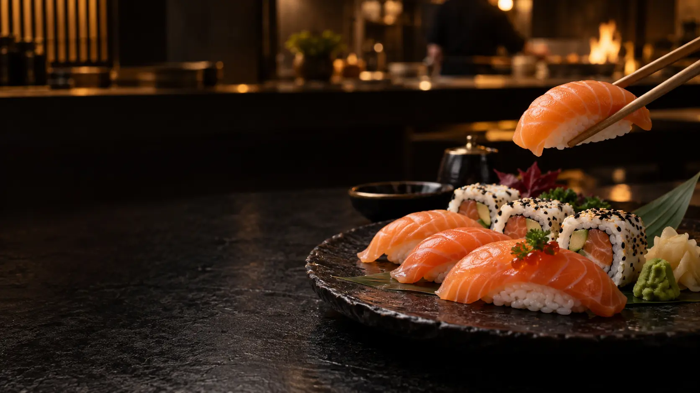
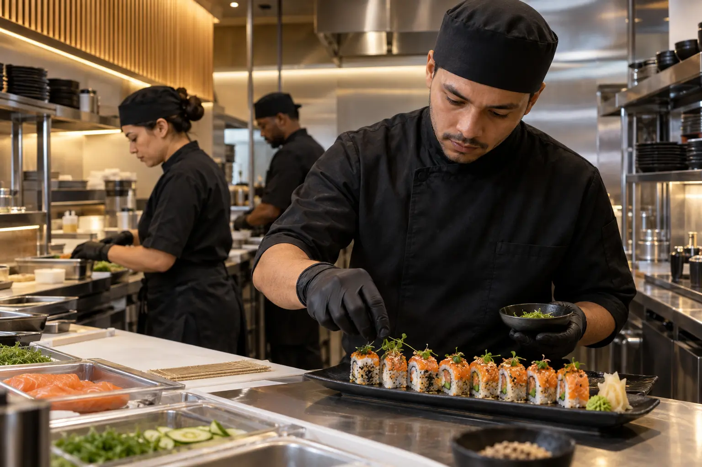
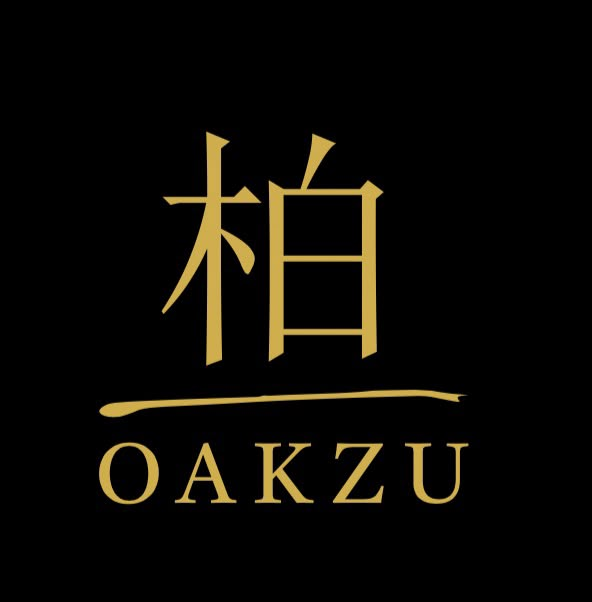
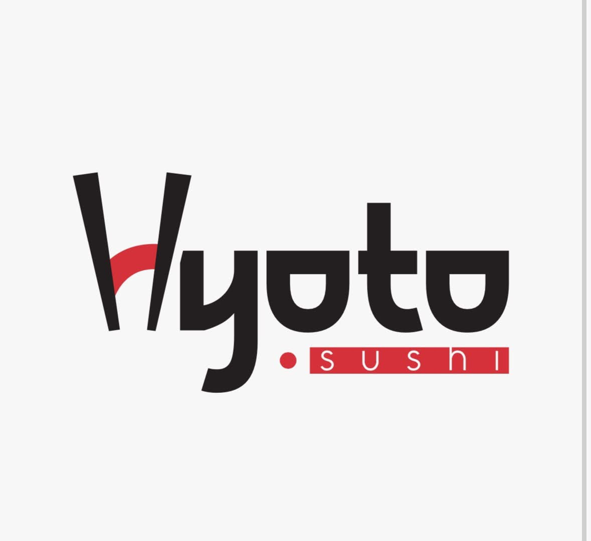
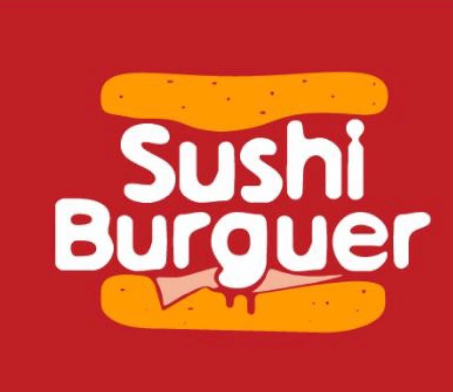
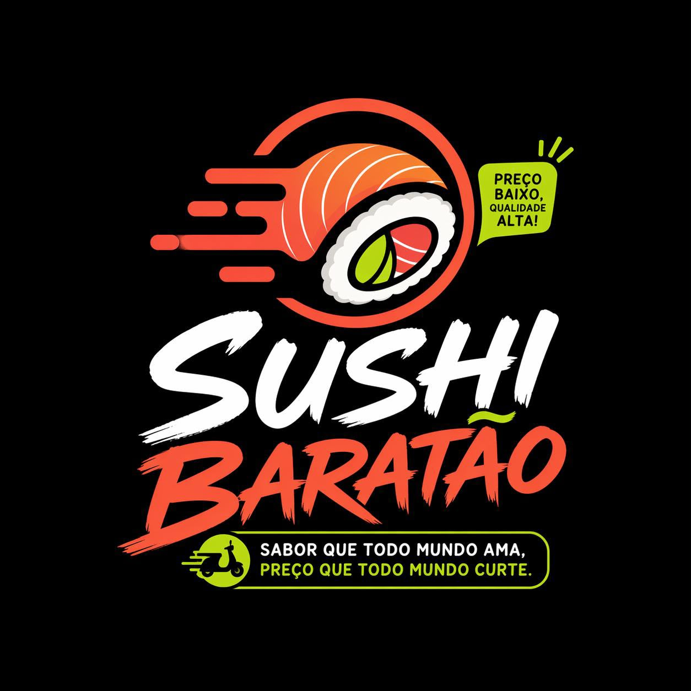

Oak Sushi
Tradição, frescor e criatividade em cada peça.
Tradição
Food Brands & Dark Kitchens
Estratégia, inovação e qualidade para diferentes públicos e momentos.
Sobre o Grupo
O Grupo Oak reúne marcas de alimentação para diferentes públicos, ocasiões e faixas de preço. Por meio do modelo Food Brands & Dark Kitchens, unimos estratégia, inovação, qualidade e excelência operacional em uma estrutura preparada para evoluir.
São propostas distintas, conectadas pela mesma essência: oferecer experiências marcantes, gerar valor e construir relações duradouras com clientes, parceiros e investidores.

Nossas marcas
Diferentes públicos.
O mesmo propósito.

Tradição, frescor e criatividade em cada peça.
Tradição
Alta gastronomia japonesa e uma experiência premium.
Premium
Qualidade, equilíbrio e versatilidade para todos os momentos.
Versatilidade
A inovação que une o melhor do sushi com o formato do burger.
Inovação
Sushi popular, preço acessível, sem perder qualidade.
AcessibilidadeNosso modelo
Uma operação integrada e escalável que combina eficiência, tecnologia e expertise para o crescimento sustentável das marcas.
Cozinhas estruturadas e equipes especializadas.
Padrão, controle e eficiência em escala.
Marcas fortes e conectadas com o consumidor.
Mais alcance, mais escolhas e mais oportunidades.
Força operacional
Parcerias
Convidamos parceiros estratégicos, investidores, instituições financeiras e empreendedores a crescer conosco. O Grupo Oak está preparado para expandir suas marcas, aperfeiçoar operações e levar experiências únicas para novas pessoas e regiões.
Converse com o Grupo Oak →Contato
Novos mercados. Mais pessoas. Mais histórias para contar.